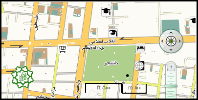

نام ايستگاه: تئاتر شهر
کد ايستگاه: G4I3
آدرس: خیابان انقلاب اسلامی، چهارراه ولیعصر(عج)
مساحت سرپوشیده: 24640 متر مربع
مساحت فضای باز: 0متر مربع
ورودي هاي ايستگاه: ضلع شمالی ، جنوبی ، غربی و شرقی چهارراه ولی عصر (عج) از طریق زیرگذر چهارراه ولی عصر (عج)